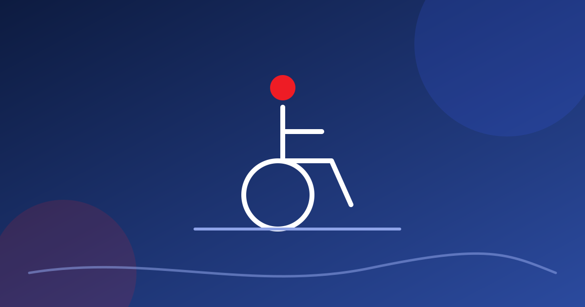

Imagine uma sala de espetáculos bem acessível (exemplo fictício). Rampa na entrada, banheiro adaptado, espaço reservado para cadeira de rodas com boa visão do palco, intérprete de Libras no sábado. Parece que a casa cumpriu a lei e está de parabéns. Agora faça uma pergunta que quase ninguém faz: e se for preciso sair às pressas?

A pergunta incomoda porque obriga a pensar na pior noite. Mas é esse pensamento que separa um espaço acessível de um espaço seguro para todos. Existe até uma palavra para isso: egressibilidade, a facilidade de sair. Ela raramente entra na conversa sobre acessibilidade.
O que se sabe sobre evacuação
Pesquisas sobre evacuação de prédios de uso coletivo indicam, em geral, que pessoas com deficiência ou mobilidade reduzida enfrentam desvantagens sistemáticas em emergências. Em média, levam mais tempo para sair, dependem mais de ajuda e ficam mais expostas ao risco. Em ensaios com corredores estreitos, a presença de participantes com deficiência muda os pontos em que as pessoas aceleram ou diminuem a velocidade e a distância que mantêm umas das outras. O resultado tende a ser uma fila mais longa e um fluxo mais sensível a qualquer obstáculo no caminho.
Modelos de simulação de multidões, como o de forças sociais, indicam algo parecido. Em alta densidade e sob estresse, pequenas mudanças no desenho de uma rota de fuga alteram de forma desproporcional o fluxo e a pressão sobre as saídas. Teatros e casas de espetáculos, com plateias densas e fileiras fixas, são o tipo de ambiente em que isso pesa.
E aqui entra a crítica central: muitos planos de evacuação foram pensados para um ocupante médio e fisicamente apto. Quando a diversidade de corpos não entra no cálculo, o atraso previsto fica menor que o real, e a arquitetura vira barreira.
Entrar e sair: dois caminhos que precisam ser acessíveis
No Brasil, o debate sobre acessibilidade em espaços culturais muitas vezes termina na entrada e na poltrona. Bilheteria adaptada, plataforma elevatória, assento reservado: tudo isso aparece, e deve aparecer. Mas o percurso reverso, o de fuga, fica para depois.
Trajetos de saída com degraus, sem sinalização tátil e com portas difíceis de manusear são um problema comum. O direito à cultura inclui o direito de entrar e de sair com segurança.
Um exemplo fictício
Um teatro de bairro, com plateia de 120 lugares, reserva dois espaços para cadeira de rodas na última fileira, ao lado de uma escada. A entrada é por rampa, e a saída de emergência fica no alto de três degraus. No dia a dia, tudo parece em ordem. Numa evacuação, porém, quem usa cadeira de rodas não teria por onde passar.
Mudar os dois lugares reservados para perto do corredor central e criar uma rampa na saída lateral custa pouco, desde que a decisão venha no início do projeto. Na véspera do espetáculo, vira obra.
O que dizem as normas
- Lei Brasileira de Inclusão (Lei 13.146/2015). O artigo 44 determina a reserva de espaços livres e de assentos para pessoas com deficiência em locais de espetáculo, distribuídos em pontos de boa visibilidade e próximos aos corredores, e exige rotas de fuga e saídas de emergência acessíveis.
- Decreto 9.404/2018. Detalha a reserva de lugares e vincula as proporções mínimas à lotação máxima do local. Confira o texto atual do decreto e do artigo 44 para a proporção exata.
- ABNT NBR 9050. A norma técnica de acessibilidade da Associação Brasileira de Normas Técnicas trata de rampas, sinalização, banheiros e outros itens. Define também a área de resgate: um espaço com acesso direto a uma saída, fora do fluxo principal, onde pessoas com mobilidade reduzida aguardam socorro em segurança enquanto a evacuação acontece, com intercomunicador ao alcance da mão. Prevê ainda sinalização de emergência visual, tátil e sonora e alarmes com sinal luminoso para quem tem deficiência auditiva.
Confira sempre a edição em vigor das normas e conte com um responsável técnico para o projeto. Para saber como os Bombeiros tratam o assunto, veja as normas do Corpo de Bombeiros para eventos. A ideia central: acessibilidade e segurança precisam ser planejadas juntas. A planta abaixo mostra como isso fica no desenho de uma plateia.
Mudanças que fazem diferença
Muitas adaptações são simples e custam pouco quando entram no início do projeto:
- Rota contínua. O caminho da cadeira de rodas até uma saída precisa ser livre, sem desnível e com largura adequada, do início ao fim.
- Posição dos lugares reservados. Perto dos corredores e das saídas, e não no fundo, atrás de colunas ou no fim de um lance de escadas.
- Área de resgate. Identificada, fora do fluxo e com meio de comunicação para chamar ajuda.
- Portas. De fácil manuseio, com acionamento simples e largura compatível.
- Alerta em mais de um sentido. Alarme sonoro e luminoso, aviso falado e aviso visual. Quem não ouve, quem não vê e quem não domina o idioma precisa receber a mensagem.
- Equipe treinada. Quem trabalha na casa deve saber ajudar de forma respeitosa e segura, perguntar antes de agir e conhecer o plano.
Muitos desses itens já aparecem no checklist de segurança para espaço cultural.
Quem decide isso, na prática
Em muitos casos, a rota de fuga acessível pode ser resolvida sem uma grande obra, se a conversa acontecer cedo. Depende de uma conversa no começo do projeto entre quem produz, quem administra o espaço e o responsável técnico. Quem produz pode levar três coisas para a mesa: o mapa com os lugares reservados, o caminho de saída desenhado até a rua e a pergunta sobre onde fica a área de resgate. Se o espaço é alugado e não tem essas respostas, isso também é uma informação valiosa para decidir se vale fazer o evento ali.
Por que isso beneficia todo mundo
O desenho universal, conceito que inspira boa parte dessas normas, parte de uma ideia simples: o que ajuda uma pessoa com deficiência costuma ajudar todo o público. Uma rota livre, bem sinalizada e sem degrau serve à senhora com bengala, ao pai com carrinho de bebê e ao jovem que torceu o tornozelo. Segurança inclusiva é segurança melhor.
Cinco perguntas para levar ao espaço
- Se a plateia precisar sair rápido, por onde sai quem usa cadeira de rodas?
- Existe degrau, soleira ou rampa íngreme em algum ponto do percurso até a rua?
- As portas de saída podem ser abertas por alguém com pouca força nas mãos?
- Como a pessoa surda ou cega é avisada de que precisa sair?
- O plano de emergência está escrito, e a equipe já ensaiou?
ProduPlay · Produção cultural com método e linguagem clara.